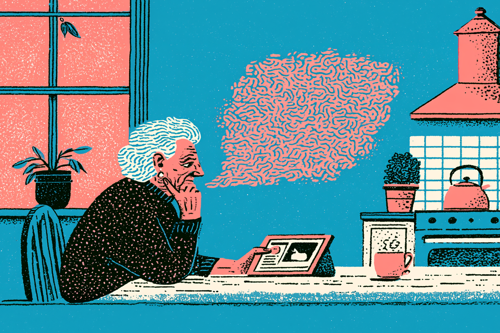
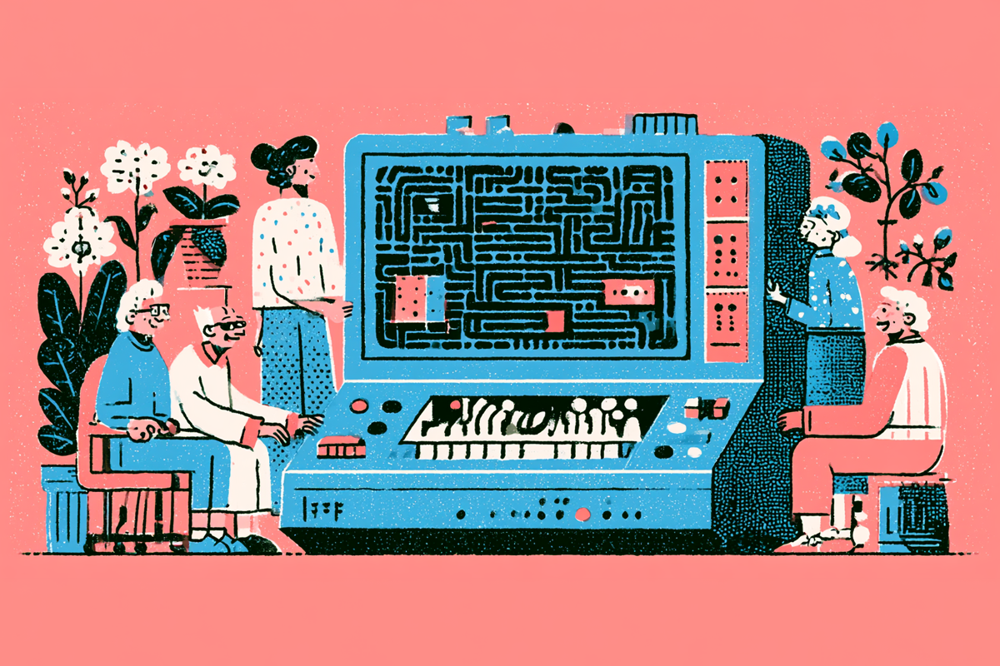
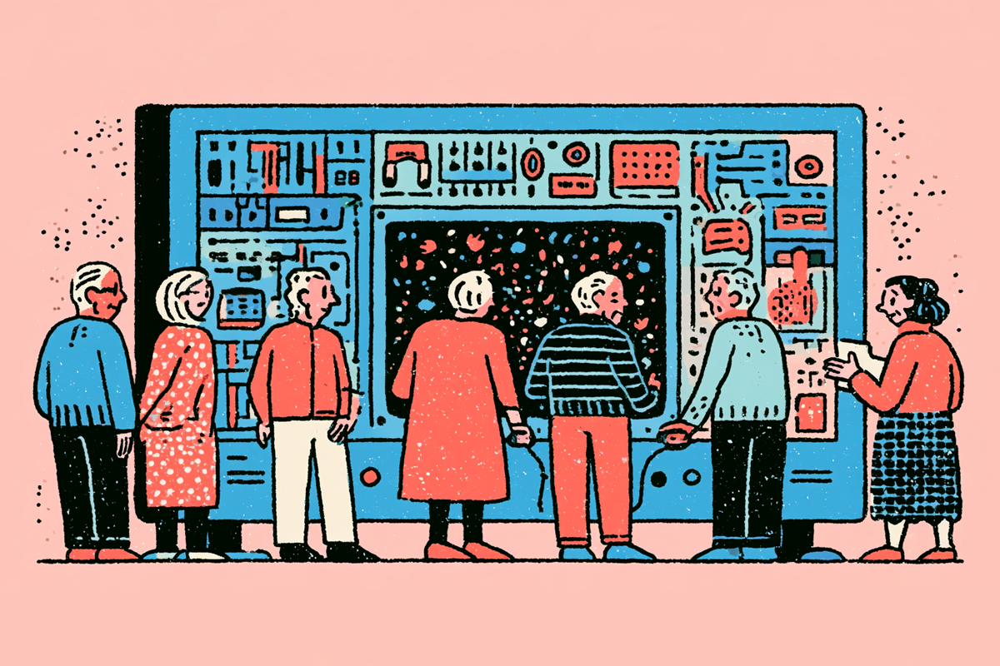

Adultos mayores + IA: la brecha que falta por cerrar
Cuándo preguntarle a ChatGPT no es tan obvio.
Cuándo preguntarle a ChatGPT no es tan obvio.

Hablamos mucho de inteligencia artificial. La tenemos integrada en nuestra vida, nos ayuda en nuestros trabajos y le preguntamos cosas de la vida cotidiana. No nos preguntamos cómo acceder a ella, ni cómo funciona, porque en teoría sabemos más o menos cómo opera. Tenemos nociones básicas, pero sabemos qué es una tecnología inteligente, que opera con contexto y que va aprendiendo con el tiempo. Pero, ¿qué pasa con los adultos mayores y la IA? ¿Le ven el provecho o la odian?
Más allá de usarla para ayudar a mi abuela con el control remoto del televisor o preguntarle sobre la lavadora, nunca me había parado más tiempo a pensar sobre el impacto, ya sea positivo o negativo, que puede tener la IA en el segmento más adulto de la población. Porque el hecho de que la usan ya está comprobado: el 55% de las personas arriba de 60 ha usado IA para propósitos relacionados con salud o conexión social, según una encuesta de la Universidad de Michigan.

¿Para qué más la usan? Un 37% declaró que la utiliza para entretenimiento, mientras que un 30% para recibir información de diferentes temas. La diferencia radica más en quiénes que en el para qué: la misma encuesta encontró que existe una diferencia de casi diez puntos porcentuales entre el uso que le dan los adultos mayores con buena salud y los adultos mayores con mala salud. Los primeros la usan significativamente más.
Sin embargo, usar IA no significa necesariamente entenderla. Y ahí aparece una diferencia importante entre generaciones. Mientras muchos jóvenes incorporaron ChatGPT casi como una extensión natural de Google, para buena parte de los adultos mayores todavía existe cierta incomodidad al momento de “hablarle” a una máquina.
Hay algo muy humano en la forma en que usamos la inteligencia artificial: la IA funciona mejor mientras más contexto recibe, mientras más específica es la pregunta, porque va aprendiendo. Pero eso exige una lógica distinta a la que muchos aprendieron usando internet, porque ya no basta con escribir “dolor rodilla”. Ahora hay que conversar, explicar, volver a preguntar, cosa que para quienes no crecieron interactuando digitalmente puede sentirse raro.

Más allá del uso que le puedan dar en la casa, también se ha utilizado la IA en programas sociales de adultos mayores. Actualmente, el Municipio de Madrid está utilizando una herramienta de IA creada por ellos para analizar los riesgos de soledad de adultos mayores de su territorio y conectarlos con servicios sociales del mismo municipio.
Y es que el potencial para ayudar a los adultos mayores con IA es enorme, y quizás más fácil de lograr que convencerlos de usar la IA de manera individual. Porque un porcentaje no menor, un 54%, declaró que no confía del todo en esa tecnología. También se sienten preocupados por dejarse engañar y no poder diferenciar qué viene de un humano y qué viene de la IA: un 92% afirmó que necesita saber cómo se ha generado la información que está leyendo.
Buena parte de la conversación sobre inteligencia artificial gira en torno a productividad y automatización, conceptos que suelen venir acompañados de interfaces poco intuitivas, lenguaje técnico y una lógica de prueba y error que no todos están dispuestos a aprender.

Quizás el desafío no es convencer a los adultos mayores de usar IA, sino construir herramientas que se adapten mejor a todas las edades, con interfaces más simples y explicaciones más claras. Porque al final, la tecnología puede partir de un código complejo, pero fracasa si no logra algo profundamente humano: hacer sentir a las personas incluidas.
¿Qué opinas tú?
 Tecnología
TecnologíaSi eres como yo y revisas TikTok e Instagram constantemente, te habrás dado cuenta de que estas redes son casi como un experimento social.
 Tecnología
TecnologíaDurante años hemos pensado en la inteligencia artificial como algo súper frío: servidores gigantes, computadores procesando datos y…
 Tecnología
TecnologíaEstamos tan acostumbrados a ver la inteligencia artificial hacer cosas random (dibujar imágenes raras, responder preguntas existenciales…